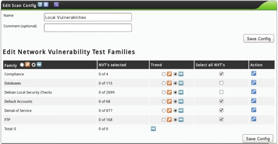

5.2 使用OpenVAS
OpenVAS（开放式漏洞评估系统）是一个客户端/服务器架构，它常用来评估目标主机上的漏洞。OpenVAS是Nessus项目的一个分支，它提供的产品是完全地免费。OpenVAS默认安装在标准的Kali Linux上，本节将介绍配置及启动OpenVAS。
5.2.1 配置OpenVAS
OpenVAS默认在Kali Linux中已经安装。如果要使用该工具，还需要进行一些配置。配置OpenVAS具体操作步骤如下所示。
（1）在终端窗口中切换到OpenVAS目录，为OpenVAS程序创建SSL证书。执行命令如下所示：
root@kali:~# cd /usr/share/openvas/
root@kali:/usr/share/openvas# openvas-mkcert
执行以上命令后，将输出如下所示的信息：
以上提示的信息，可以配置也可以不配置。如果不想配置的话，直接按下Enter键接收默认值即可。以上信息设置完后，将显示以下信息：
-----------------------------------------------
Creation of the OpenVAS SSL Certificate
-----------------------------------------------
Congratulations. Your server certificate was properly created.
The following files were created:
. Certification authority:
Certificate = /var/lib/openvas/CA/cacert.pem
Private key = /var/lib/openvas/private/CA/cakey.pem
. OpenVAS Server :
Certificate = /var/lib/openvas/CA/servercert.pem
Private key = /var/lib/openvas/private/CA/serverkey.pem
Press [ENTER] to exit
输出的信息显示了创建的OpenVAS证书及位置。此时按下Enter键，退出程序。
（2）使用OpenVAS NVT Feed同步OpenVAS NVT数据库，并且更新最新的漏洞检查。执行命令如下所示：
root@kali:/usr/share/openvas# openvas-nvt-sync
[i] This script synchronizes an NVT collection with the 'OpenVAS NVT Feed'.
[i] The 'OpenVAS NVT Feed' is provided by 'The OpenVAS Project'.
[i] Online information about this feed: 'http://www.openvas.org/openvas-nvt-feed.html'.
[i] NVT dir: /var/lib/openvas/plugins
[i] rsync is not recommended for the initial sync. Falling back on http.
[i] Will use wget
[i] Using GNU wget: /usr/bin/wget
[i] Configured NVT http feed: http://www.openvas.org/openvas-nvt-feed-current.tar.bz2
[i] Downloading to: /tmp/openvas-nvt-sync.xAKyyzYVdT/openvas-feed-2014-04-25-8214.tar.bz2
--2014-04-25 14:35:48-- http://www.openvas.org/openvas-nvt-feed-current.tar.bz2
正在解析主机 www.openvas.org (www.openvas.org)… 5.9.98.186
正在连接 www.openvas.org (www.openvas.org)|5.9.98.186|:80… 已连接。
已发出 HTTP 请求，正在等待回应… 200 OK
长度：14771061 (14M) [application/x-bzip2]
正在保存至:“/tmp/openvas-nvt-sync.xAKyyzYVdT/openvas-feed-2014-04-25-8214.tar.bz2”
100%[===============================================================>] 14,771,061 54.0K/s 用时 7m 16s
2014-04-25 14:43:07 (33.1 KB/s) - 已保存“/tmp/openvas-nvt-sync.xAKyyzYVdT/openvas- feed-
2014-04-25-8214.tar.bz2” [14771061/14771061])
12planet_chat_server_xss.nasl
12planet_chat_server_xss.nasl.asc
2013/
2013/secpod_ms13-005.nasl.asc
2013/gb_astium_voip_pbx_51273.nasl
2013/secpod_ms13-001.nasl
2013/deb_2597.nasl
2013/gb_astium_voip_pbx_51273.nasl.asc
2013/secpod_ms13-006.nasl
2013/gb_edirectory_57038.nasl
2013/secpod_ms13-006.nasl.asc
…省略部分内容…
zope_zclass.nasl.asc
zyxel_http_pwd.nasl
zyxel_http_pwd.nasl.asc
zyxel_pwd.nasl
zyxel_pwd.nasl.asc
[i] Download complete
[i] Checking dir: ok
[i] Checking MD5 checksum: ok
输出的信息显示了同步OpenVAS NVT数据库的信息，并也更新了所有的漏洞信息。
（3）创建客户端证书库。执行命令如下所示：
root@kali:/usr/share/openvas# openvas-mkcert-client -n om -i
Generating RSA private key, 1024 bit long modulus
………………………………++++++
……++++++
e is 65537 (0x10001)
You are about to be asked to enter information that will be incorporated
into your certificate request.
What you are about to enter is what is called a Distinguished Name or a DN.
There are quite a few fields but you can leave some blank
For some fields there will be a default value,
If you enter '.', the field will be left blank.
-----
Country Name (2 letter code) [DE]:State or Province Name (full name) [Some-State]:Locality Name (eg, city) []:Organization Name (eg, company) [Internet Widgits Pty Ltd]:Organizational Unit Name (eg, section) []:Common Name (eg, your name or your server's hostname) []:Email Address []:Using configuration from /tmp/openvas-mkcert-client.16792/stdC.cnf
Check that the request matches the signature
Signature ok
The Subject's Distinguished Name is as follows
countryName :PRINTABLE:'DE'
localityName :PRINTABLE:'Berlin'
commonName :PRINTABLE:'om'
Certificate is to be certified until Apr 25 06:55:05 2015 GMT (365 days)
Write out database with 1 new entries
Data Base Updated
User om added to OpenVAS.
以上输出的信息显示了生成客户端证书的详细过程，并添加了om用户。
（4）重建数据库。执行命令如下所示：
root@kali:/usr/share/openvas# openvasmd –rebuild
执行以上命令后，没有任何输出信息。
（5）启动OpenVAS扫描，并加载所有插件。执行命令如下所示：
root@kali:/usr/share/openvas# openvassd
Loading the OpenVAS plugins…base gpgme-Message: Setting GnuPG homedir to '/etc/openvas/ gnupg'
base gpgme-Message: Using OpenPGP engine version '1.4.12'
All plugins loaded
从输出的信息中可以看到所有插件已加载。由于加载的插件比较多，所以执行该命令的时间会长一点。
（6）重建并创建数据库的备份。执行命令如下所示：
root@kali:/usr/share/openvas# openvasmd --rebuild
root@kali:/usr/share/openvas# openvasmd –backup
执行以上命令后，没有任何信息输出。
（7）创建一个管理OpenVAS的用户。执行命令如下所示：
root@kali:/usr/share/openvas# openvasad -c 'add_user' -n openvasadmin -r Admin
Enter password:
ad main:MESSAGE:2732:2014-04-25 15h25.35 CST: No rules file provided, the new user will have no restrictions.
ad main:MESSAGE:2732:2014-04-25 15h25.35 CST: User openvasadmin has been successfully created.
从输出的信息中可以看到用户openvasadmin被成功创建。
（8）创建一个普通用户。执行命令如下所示：
从输出的信息中看到用户被添加。
（9）为OpenVAS配置端口。执行命令如下所示：
root@kali:/usr/share/openvas# openvasmd -p 9390 -a 127.0.0.1
root@kali:/usr/share/openvas# openvasad -a 127.0.0.1 -p 9393
root@kali:/usr/share/openvas# gsad --http-only --listen=127.0.0.1 -p 9392
执行以上命令后，OpenVAS的端口号就被设置为9392。
注意：9392是推荐的一个Web浏览器端口。用户也可以选择其他端口号。
（10）在浏览器中输入http://127.0.0.1:9392/，打开OpenVAS登录界面，如图5.28所示。
图5.28 OpenVAS登录界面
（11）在该界面输入创建的用户名和密码，然后单击Login按钮，将显示如图5.29所示的界面。
图5.29 OpenVAS初始界面
关于启动OpenVAS介绍一些附加信息。每次运行OpenVAS时，都必须要做以下工作：
- 同步NVT Feed（当新的漏洞被发现时，该记录将改变）；
- 启动OpenVAS扫描器；
- 重建数据库；
- 备份数据库；
- 配置端口。
为了节约时间，下面将介绍编写一个简单的Bash脚本，方便用户启动OpenVAS。保存脚本文件名为OpenVAS.sh，并放该文件在/root文件夹中。脚本文件内容如下所示：
#!/bin/bash
openvas-nvt-sync
openvassd
openvasmd --rebuild
openvasmd --backup
openvasmd -p 9390 -a 127.0.0.1
openvasad -a 127.0.0.1 -p 9393
gsad --http-only --listen=127.0.0.1 -p 9392
编写好该脚本时，以后运行OpenVAS就不用执行多条命令了，只需要执行一下OpenVAS.sh脚本就可以了。
在Kali中，OpenVAS也提供了图形界面。启动OpenVAS图形界面的方法如下：
在Kali桌面上依次选择“应用程 序”|Kali Linux|“漏洞分析”|OpenVAS| openvas-gsd命令，将显示如图5.30所示的界面。
图5.30 OpenVAS图形登录界面
在该界面输入服务器的地址127.0.0.1、用户名和登录密码。然后单击Log in按钮即可登录到OpenVAS服务器。
5.2.2 创建Scan Config和扫描任务
通过以上步骤OpenVAS就配置好了，现在使用浏览器的方式登录服务器。在该服务器中新建Scan Config、创建扫描目标及新建扫描任务才可以进行各种漏洞扫描。设置好这些信息用户就可以进行各种漏洞扫描了，如本地漏洞扫描、网络漏洞扫描和指定操作系统漏洞扫描等。进行这些漏洞扫描之前，都必须要创建Scan Config和扫描任务等。这里将分别介绍这些配置，方便后面的使用。
1. 新建Scan Config
新建Scan Config的具体操作步骤如下所示。
（1）在服务器的菜单栏中依次选择Configuration|Scan Configs命令，如图5.31所示。单击Scan Configs命令后，将显示如图5.32所示的界面。
图5.31 Scan Configs
图5.32 Scan Configs界面
（2）从该界面可以看到默认总共有5个Scan Config。在该界面单击（New Scan Config）图标，将显示如图5.33所示的界面。
图5.33 New Scan Config
（3）在该界面设置扫描的名称，这里设置为Local Vulnerabilities。对于Base选择Empty，static and fast复选框，该选项允许用户从零开始并创建自己的配置。然后单击Create Scan Config按钮，将会看到新建的配置，如图5.34所示。
图5.34 新建的Local Vulnerabilities
（4）从该界面可以看到新建的Local Vulnerabilities，要编辑该配置可以单击（Edit Scan Config）图标。创建好Scan Config后需选择扫描的内容。此时单击图标选择扫描的内容，如图5.35所示。

图5.35 选择扫描内容
（5）从该界面的Family栏看到有很多的可扫描信息，此时将Select all NVT's栏中的复选框勾选上即可，设置完后，单击Save Config按钮。图5.35是经过修改后的一个图，该界面显示的内容较多，由于篇幅的原因，这里只截取了一部分。
2. 新建目标
在服务器的菜单栏中依次选择Configuration|Targets命令，将显示如图5.36所示的 界面。
图5.36 Targets界面
在该界面单击（New Target）图标，将显示如图5.37所示的界面。
图5.37 新建Target界面
在该界面输入Target名称及扫描的主机。然后单击Create Target按钮，将显示如图5.38所示的界面。
图5.38 新建的目标
从该界面可以看到新建的Local Vulnerabilities目标。
3. 新建任务
在OpenVAS的菜单栏中依次选择Scan Management|New Task命令，将显示如图5.39所示的界面。
图5.39 新建任务
在该界面设置任务名称、Scan Config和Scan Targets，然后单击Create Task按钮，将显示如图5.40所示的界面。
图5.40 新建的任务
在该界面单击（Start）图标，将开始漏洞扫描。当启动该扫描任务后，按钮将变为 （Pause），单击该按钮可以暂停扫描，也可以单击（Stop）停止扫描。
（Pause），单击该按钮可以暂停扫描，也可以单击（Stop）停止扫描。
5.2.3 扫描本地漏洞
OpenVAS允许用户大范围扫描漏洞，并且将限制在用户的评估列表中。目标主机的漏洞指定是从评估中获得的信息。本小节将介绍使用OpenVAS来扫描用户指定本地目标系统上的漏洞。扫描本地漏洞的具体操作步骤如下所示。
（1）新建名为Local Vulnerabilities的Scan Config。
（2）添加扫描的类型，所需扫描类型如表5-4所示。
表5-4 扫描的类型
| Compliance | 扫描Compliance漏洞 |
|---|---|
| Default Accounts | 扫描默认账号漏洞 |
| Denial of Service | 扫描拒绝服务漏洞 |
| FTP | 扫描FTP服务器漏洞 |
| Ubuntu Local Security Checks | 扫描Ubuntu系统的本地安全漏洞 |
（3）创建目标系统。
（4）创建名为Local Vulnerabilities扫描任务。
（5）扫描完本地漏洞的显示界面如图5.41所示。
图5.41 扫描漏洞完成
（6）在该界面单击（Task Details）图标，查看漏洞扫描的详细信息。显示界面如图5.42所示。
图5.42 扫描的详细信息
（7）该界面显示了两个窗口，分别是任务详细信息和本地漏洞扫描报告信息。用户从报告信息中可以了解本地系统是否有漏洞。在该界面单击Actions栏下的（Details）图标可以查看详细情况。单击该图标后，将显示如图5.43所示的界面。
图5.43 报告摘要
（8）在该界面显示了所有信息，这些信息可以通过单击（Download）图标下载扫描报告。
5.2.4 扫描网络漏洞
本小节将介绍使用OpenVAS扫描一个网络漏洞。这些漏洞的信息是指一个目标网络中某个设备的信息。本小节中将Windows XP、Windows 7、Metasploitable 2.0和Linux系统作为目标测试系统。扫描网络漏洞的具体操作步骤如下所示。
（1）新建名为Network Vulnerability的Scan Config。
（2）添加所需扫描的类型，如表5-5所示。
表5-5 扫描类型
| Brute force attacks | 暴力攻击 |
|---|---|
| Buffer overflow | 扫描缓存溢出漏洞 |
| CISCO | 扫描CISCO路由器 |
| Compliance | 扫描Compliance漏洞 |
| Databases | 扫描数据库漏洞 |
| Default Accounts | 扫描默认账号漏洞 |
| Denial of Service | 扫描拒绝服务漏洞 |
| FTP | 扫描FTP服务器漏洞 |
| Finger abuses | 扫描Finger滥用漏洞 |
| Firewalls | 扫描防火墙漏洞 |
| Gain a shell remotelly | 扫描获取远程Shell的漏洞 |
| General | 扫描漏洞 |
| Malware | 扫描恶意软件 |
| Netware | 扫描网络操作系统 |
| NMAP NSE | 扫描NMAP NSE漏洞 |
| Peer-To-Peer File Sharing | 扫描共享文件漏洞 |
| Port Scanners | 扫描端口漏洞 |
| Privilege Escalation | 扫描提升特权漏洞 |
| Product Detection | 扫描产品侦察 |
| RPC | 扫描RPC漏洞 |
| Remote File Access | 扫描远程文件访问漏洞 |
| SMTP Problems | 扫描SMTP问题 |
| SNMP | 扫描SNMP漏洞 |
| Service detection | 扫描服务侦察 |
| Settings | 扫描基本设置漏洞 |
（3）创建名为Network Vulnerability目标系统。
（4）创建名为Network Scan扫描任务。
（5）扫描结果，如图5.44所示。
图5.44 Network扫描结果
（6）从该界面可以看到整个网络中漏洞的情况不太严重，漏洞状态为Medium。查看详细漏洞扫描情况的方法在前面已经介绍，这里就不再赘述。
5.2.5 扫描指定Linux系统漏洞
本小节将介绍使用OpenVAS扫描指定Linux系统的漏洞。这些漏洞信息来自在一个目标网络中指定的Linux系统。推荐使用的目标Linux系统为Metasploitable 2.0和其他任何版本Linux。扫描指定Linux系统漏洞的具体操作步骤如下所示。
（1）新建名为Linux Vulnerabilities的Scan Config。
（2）添加所需的扫描类型，如表5-6所示。
表5-6 扫描的类型
| Brute force attacks | 暴力攻击 |
|---|---|
| Buffer overflow | 扫描缓存溢出漏洞 |
| Compliance | 扫描Compliance漏洞 |
| Databases | 扫描数据库漏洞 |
| Default Accounts | 扫描默认用户账号漏洞 |
| Denial of Service | 扫描拒绝服务的漏洞 |
| FTP | 扫描FTP服务器漏洞 |
| Finger abuses | 扫描Finger滥用漏洞 |
| Gain a shell remotely | 扫描获取远程Shell漏洞 |
| General | 扫描General漏洞 |
| Malware | 扫描恶意软件漏洞 |
| Netware | 扫描网络操作系统 |
| NMAP NSE | 扫描NMAP NSE漏洞 |
| Port Scanners | 扫描端口漏洞 |
| Privilege Escalation | 扫描提升特权漏洞 |
| Product Detection | 扫描产品侦察漏洞 |
| RPC | 扫描RPC漏洞 |
| Remote File Access | 扫描远程文件访问漏洞 |
| SMTP Porblems | 扫描SMTP问题 |
| SNMP | 扫描SNMP漏洞 |
| Service detection | 扫描服务侦察漏洞 |
| Settings | 扫描基本设置漏洞 |
| Web Servers | 扫描Web服务漏洞 |
（3）创建Linux Vulnerabilities目标系统。
（4）创建Linux Scan扫描任务。
（5）扫描结果，如图5.45所示。
图5.45 Linux扫描结果
（6）从该界面可以看到目标系统中有非常严重的漏洞。此时单击（Task Details）图标，查看漏洞扫描的详细信息，如图5.46所示。
图5.46 Task Details
（7）从该界面的扫描报告中可以看到有14个非常严重的漏洞信息。在该界面的Actions中单击（Details）图标查看具体漏洞情况，如图5.47所示。
图5.47 漏洞消息
（8）该界面显示的信息很多，由于篇幅的原因，这里只截取了其中一个较严重的漏洞。从该界面可以看到192.168.41.142目标主机上存在非常严重的漏洞。漏洞信息包括目标主机所开发的端口、OID和解决方法等。关于漏洞的报告可以使用前面介绍过的方法进行下载。
5.2.6 扫描指定Windows系统漏洞
本小节将介绍使用OpenVAS扫描指定Windows系统漏洞。这些漏洞信息来自在一个目标网络内指定的Windows目标系统。这里推荐的目标系统为Windows XP和Windows 7。
使用OpenVAS扫描指定Windows系统漏洞的具体操作步骤如下所示。
（1）新建名为Windows Vulnerabilities的Scan Config。
（2）添加所需的扫描类型，如表5-7所示。
表5-7 扫描的类型
| Brute force attacks | 暴力攻击 |
|---|---|
| Buffer overflow | 扫描缓存溢出漏洞 |
| Compliance | 扫描Compliance漏洞 |
| Databases | 扫描数据库漏洞 |
| Default Accounts | 扫描默认用户账号漏洞 |
| Denial of Service | 扫描拒绝服务漏洞 |
| FTP | 扫描FTP服务器漏洞 |
| Gain a shell remotely | 扫描获取远程Shell的漏洞 |
| General | 扫描General漏洞 |
| Malware | 扫描网络操作系统漏洞 |
| NMAP NSE | 扫描NMAP NSE漏洞 |
| Port Scanners | 扫描端口漏洞 |
| Privilege Escalation | 扫描提升特权漏洞 |
| Product Detection | 扫描产品侦察漏洞 |
| RPC | 扫描RPC漏洞 |
| Remote File Access | 扫描远程文件访问漏洞 |
| SMTP Problems | 扫描SMTP问题漏洞 |
| SNMP | 扫描SNMP漏洞 |
| Service detection | 扫描服务侦察漏洞 |
| Web Servers | 扫描Web服务漏洞 |
| Windows | 扫描Windows系统漏洞 |
| Windows:Microsoft Bulletins | 扫描Windows系统微软公告漏洞 |
（3）创建名为Windows Vulnerabilities目标系统。
（4）创建名为Windows Scan扫描任务。
（5）扫描完成后，结果如图5.48所示。
图5.48 扫描结果
（6）从该界面可以看到Windows Scan扫描已完成，漏洞情况为Medium。可以在该界面单击（Task Details）图标查看详细信息，如图5.49所示。
图5.49 Task Details
（7）从该界面可以了解扫描任务的设置及扫描报告信息，如扫描完成的时间、漏洞情况及日志。如果想查看更详细的报告，使用前面介绍过的方法下载扫描报告。